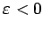
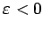
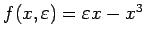

Inhalt Index DeskTop Bronstein

 Dynamische Systeme und Chaos Bifurkationstheorie, Wege zum Chaos Bifurkationen in Morse-Smale-Systemen Lokale Bifurkationen nahe Ruhelagen
Dynamische Systeme und Chaos Bifurkationstheorie, Wege zum Chaos Bifurkationen in Morse-Smale-Systemen Lokale Bifurkationen nahe Ruhelagen


Manche Differentialgleichungen (17.17) besitzen Symmetrien im folgenden Sinne: Es existiert eine lineare Transformation T (oder sogar eine Gruppe von Transformationen), so daß für alle  und
und  ist. Ein Orbit
ist. Ein Orbit  von (17.17) heißt symmetrisch bezüglich T, falls ist.
von (17.17) heißt symmetrisch bezüglich T, falls ist.
Von einer symmetriebrechenden Bifurkation bei  spricht man z.B. in (17.17) (bei l = 1), wenn für  eine stabile Ruhelage oder ein stabiler Grenzzyklus vorliegt, die jeweils symmetrisch bezüglich T sind, und bei
spricht man z.B. in (17.17) (bei l = 1), wenn für  eine stabile Ruhelage oder ein stabiler Grenzzyklus vorliegt, die jeweils symmetrisch bezüglich T sind, und bei  zwei weitere stabile Ruhelagen oder Grenzzyklen entstehen, die nicht mehr symmetrisch bezüglich T sind.
zwei weitere stabile Ruhelagen oder Grenzzyklen entstehen, die nicht mehr symmetrisch bezüglich T sind.
| Beispiel |
|
Für System (17.17) mit  definiert eine Symmetrie, denn . Bei ist x1 = 0 eine stabile Ruhelage. Bei |